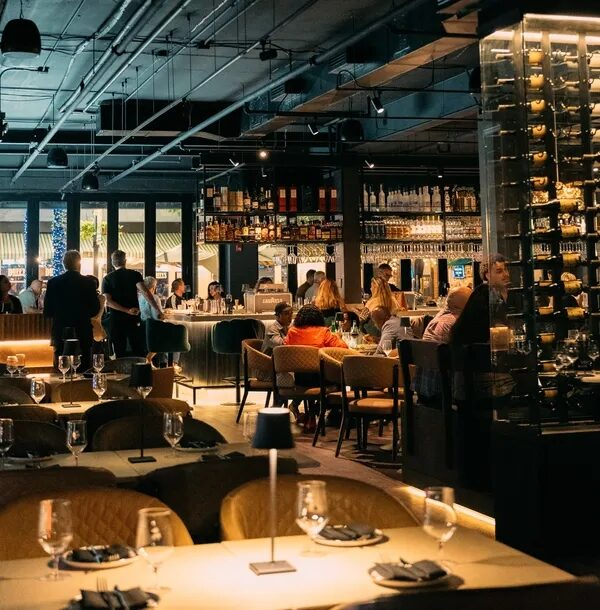
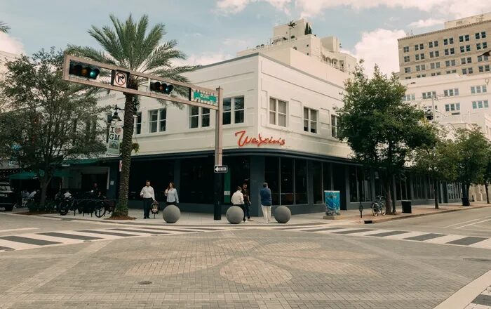

Restaurant & Hospitality
Waxin's is a Swedish-American restaurant concept with roots in Palm Beach Gardens. Their third location — and their most ambitious — landed at 230 Clematis St in downtown West Palm Beach, occupying the corner of Clematis Street and Olive Avenue.
The address is about as visible as it gets in West Palm Beach commercial glazing. Clematis Street is the city's main dining and entertainment corridor. The corner of Clematis and Olive is where you go to be seen. And Waxin's ownership group understood exactly what that meant for the glass: the building's exterior had to perform as much as the menu inside.
The Palm Beach Post noted the restaurant's "expansive floor-to-ceiling windows that open completely along Clematis Street." That's not an accident of architecture. It's the result of a deliberate product choice — Euro-Wall — and an installation that had to be executed without margin for error. When the glass is the design centerpiece, the glazing contractor has to be perfect.
ACG worked directly with the Waxin's ownership group. No general contractor layer. That means the owners brought us in on the conversation early — before the glass was just a line item on a bid list — and we stayed through the full installation and close-out.
The scope covered two distinct systems: fixed storefront glazing along both Clematis Street and Olive Avenue frontages, and the Euro-Wall lift-and-slide opening system at the corner. The fixed storefront is the frame — the full-height glass that wraps the building and draws the eye from half a block away. The Euro-Wall is the centerpiece.
The corner configuration required precise engineering. Two wall sections meeting at 90 degrees, both capable of folding completely open. The panels had to track on their hardware with zero binding, seal tight against Florida weather when closed, and lock securely at end of service. Every panel custom-fabricated to the opening, every frame aligned to a fraction of an inch. This is not a standard storefront installation — it's a performance system that happens to be made of glass.
Explore more storefront installation work across Florida, or hospitality glazing projects where ACG has delivered similar high-visibility scopes.
Euro-Wall is a European-origin lift-and-slide door system designed for large-format glass panels. The mechanics are different from a standard sliding door: the panel first lifts slightly off its bottom track, then glides laterally on precision roller hardware. The result is a system that can handle panel sizes and weights that would be impossible with a conventional slide, with the minimal frame profiles that high-end architecture demands.
For a restaurant, the Euro-Wall value proposition is specific. You get an entire wall — or in Waxin's case, an entire corner — that disappears on a good weather evening. The indoor-outdoor divide ceases to exist. Guests at the window tables are effectively on the sidewalk. The energy of Clematis Street comes in. The restaurant spills out. That atmosphere is worth a lot to a hospitality brand, and it's only possible with a system engineered to open at that scale.
The same system is going into the Panther National Clubhouse — a private golf club project where the indoor-outdoor design language is equally central to the brief. ACG is one of a small number of glazing contractors in Florida with hands-on Euro-Wall installation experience. Find the full product line through our manufacturer partners page.
ACG's headquarters is in West Palm Beach. When we install glass on Clematis Street, we're installing it in our own backyard — on one of the most-walked blocks in the city, visible to every GC, architect, developer, and property owner who walks or drives through downtown.
Waxin's WPB opened November 21, 2025. Every dinner service since has been a live demonstration of what Euro-Wall looks like in the real world, installed right. Any decision-maker evaluating a similar system for a restaurant, retail, or hospitality project in South Florida can walk 230 Clematis Street and see the installation firsthand.
For contractors building in Palm Beach County, ACG handles the complete glazing scope — from plan review through punch list. Send us your plans and we'll have a complete scope back to you in 48 hours.


Restaurants, hospitality, retail — ACG delivers the glazing scope on time and on brand. Euro-Wall, storefront, curtainwall. Send us your plans and get a complete scope in 48 hours.
Send Us Plans